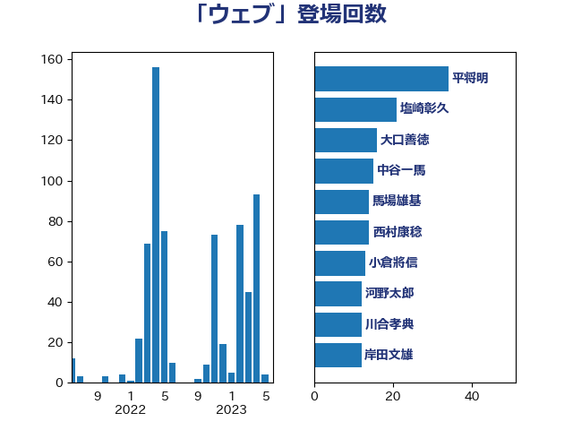

単語「ウェブ」

| 平将明 | 自由民主党 | 34 回 |
| 塩崎彰久 | 自由民主党 | 21 回 |
| 大口善徳 | 公明党 | 16 回 |
| 中谷一馬 | 立憲民主党 | 15 回 |
| 馬場雄基 | 立憲民主党 | 14 回 |
| 西村康稔 | 自由民主党 | 14 回 |
| 小倉將信 | 自由民主党 | 13 回 |
| 河野太郎 | 自由民主党 | 12 回 |
| 川合孝典 | 国民民主党 | 12 回 |
| 岸田文雄 | 自由民主党 | 12 回 |
| 浅田均 | 日本維新の会 | 11 回 |
| 古川禎久 | 自由民主党 | 11 回 |
| 齋藤健 | 自由民主党 | 9 回 |
| 石橋林太郎 | 自由民主党 | 9 回 |
| 仁比聡平 | 日本共産党 | 9 回 |
| 川崎ひでと | 自由民主党 | 8 回 |
| 谷公一 | 自由民主党 | 6 回 |
| 後藤茂之 | 自由民主党 | 6 回 |
| 鈴木庸介 | 立憲民主党 | 4 回 |
| 輿水恵一 | 公明党 | 4 回 |
| 神田潤一 | 自由民主党 | 4 回 |
| 津島淳 | 自由民主党 | 4 回 |
| 松本剛明 | 自由民主党 | 4 回 |
| 平林晃 | 公明党 | 4 回 |
| 宮本岳志 | 日本共産党 | 4 回 |
| 塩川鉄也 | 日本共産党 | 4 回 |
| 佐々木さやか | 公明党 | 4 回 |
| 鈴木俊一 | 自由民主党 | 3 回 |
| 道下大樹 | 立憲民主党 | 3 回 |
| 紙智子 | 日本共産党 | 3 回 |
| 玉木雄一郎 | 国民民主党 | 3 回 |
| 牧島かれん | 自由民主党 | 3 回 |
| 斉藤鉄夫 | 公明党 | 3 回 |
| 小野泰輔 | 日本維新の会 | 3 回 |
| 安江伸夫 | 公明党 | 3 回 |
| 嘉田由紀子 | 無所属 | 3 回 |
| 加田裕之 | 自由民主党 | 3 回 |
| 伊東信久 | 日本維新の会 | 3 回 |
| 中谷真一 | 自由民主党 | 3 回 |
| 階猛 | 立憲民主党 | 2 回 |
| 里見隆治 | 公明党 | 2 回 |
| 藤岡隆雄 | 立憲民主党 | 2 回 |
| 荒井優 | 立憲民主党 | 2 回 |
| 稲富修二 | 立憲民主党 | 2 回 |
| 浜田聡 | NHK党 | 2 回 |
| 梅村みずほ | 日本維新の会 | 2 回 |
| 本田顕子 | 自由民主党 | 2 回 |
| 本村伸子 | 日本共産党 | 2 回 |
| 山際大志郎 | 自由民主党 | 2 回 |
| 山本有二 | 自由民主党 | 2 回 |
| 山口壯 | 自由民主党 | 2 回 |
| 小泉進次郎 | 自由民主党 | 2 回 |
| 小林鷹之 | 自由民主党 | 2 回 |
| 寺田静 | 無所属 | 2 回 |
| 守島正 | 日本維新の会 | 2 回 |
| 太田房江 | 自由民主党 | 2 回 |
| 吉良よし子 | 日本共産党 | 2 回 |
| 吉田久美子 | 公明党 | 2 回 |
| 加藤勝信 | 自由民主党 | 2 回 |
| 黄川田仁志 | 自由民主党 | 1 回 |
| 高野光二郎 | 自由民主党 | 1 回 |
| 高橋千鶴子 | 日本共産党 | 1 回 |
| 音喜多駿 | 日本維新の会 | 1 回 |
| 青柳仁士 | 日本維新の会 | 1 回 |
| 阿部司 | 日本維新の会 | 1 回 |
| 鎌田さゆり | 立憲民主党 | 1 回 |
| 鈴木馨祐 | 自由民主党 | 1 回 |
| 鈴木英敬 | 自由民主党 | 1 回 |
| 鈴木義弘 | 国民民主党 | 1 回 |
| 足立康史 | 日本維新の会 | 1 回 |
| 赤木正幸 | 日本維新の会 | 1 回 |
| 谷田川元 | 立憲民主党 | 1 回 |
| 西岡秀子 | 国民民主党 | 1 回 |
| 葉梨康弘 | 自由民主党 | 1 回 |
| 舟山康江 | 国民民主党 | 1 回 |
| 緒方林太郎 | 無所属 | 1 回 |
| 石川大我 | 立憲民主党 | 1 回 |
| 石井啓一 | 公明党 | 1 回 |
| 田村智子 | 日本共産党 | 1 回 |
| 田村まみ | 国民民主党 | 1 回 |
| 田所嘉徳 | 自由民主党 | 1 回 |
| 田中健 | 国民民主党 | 1 回 |
| 玄葉光一郎 | 立憲民主党 | 1 回 |
| 牧山ひろえ | 立憲民主党 | 1 回 |
| 片山さつき | 自由民主党 | 1 回 |
| 熊谷裕人 | 立憲民主党 | 1 回 |
| 渡辺博道 | 自由民主党 | 1 回 |
| 清水真人 | 自由民主党 | 1 回 |
| 池下卓 | 日本維新の会 | 1 回 |
| 永岡桂子 | 自由民主党 | 1 回 |
| 松野博一 | 自由民主党 | 1 回 |
| 東徹 | 日本維新の会 | 1 回 |
| 杉田水脈 | 自由民主党 | 1 回 |
| 杉久武 | 公明党 | 1 回 |
| 末松信介 | 自由民主党 | 1 回 |
| 日下正喜 | 公明党 | 1 回 |
| 打越さく良 | 立憲民主党 | 1 回 |
| 平沼正二郎 | 自由民主党 | 1 回 |
| 市村浩一郎 | 日本維新の会 | 1 回 |
| 川田龍平 | 立憲民主党 | 1 回 |
| 岩田和親 | 自由民主党 | 1 回 |
| 岩本剛人 | 自由民主党 | 1 回 |
| 山口那津男 | 公明党 | 1 回 |
| 山下貴司 | 自由民主党 | 1 回 |
| 小田原潔 | 自由民主党 | 1 回 |
| 小池晃 | 日本共産党 | 1 回 |
| 宮崎雅夫 | 自由民主党 | 1 回 |
| 奥野総一郎 | 立憲民主党 | 1 回 |
| 大西健介 | 立憲民主党 | 1 回 |
| 大石あきこ | れいわ新選組 | 1 回 |
| 大島敦 | 立憲民主党 | 1 回 |
| 堀場幸子 | 日本維新の会 | 1 回 |
| 和田政宗 | 自由民主党 | 1 回 |
| 吉川沙織 | 立憲民主党 | 1 回 |
| 勝部賢志 | 立憲民主党 | 1 回 |
| 伊藤孝恵 | 国民民主党 | 1 回 |
| 仁木博文 | 無所属 | 1 回 |
| 中村裕之 | 自由民主党 | 1 回 |
| 三木圭恵 | 日本維新の会 | 1 回 |